library("tidyverse") # Regular data wrangling
library("mdatools") # Chemometrics
library("yardstick") # Additional performance metrics
library("qs") # Loading serialized files3 Chemometrics
In this section, we introduce a modeling paradigm commonly referred to as Chemometrics. According to Wikipedia,
Chemometrics is the science of extracting information from chemical systems by data-driven means. Chemometrics is inherently interdisciplinary, using methods frequently employed in core data-analytic disciplines such as multivariate statistics, applied mathematics, and computer science, in order to address problems in chemistry, biochemistry, medicine, biology and chemical engineering. In this way, it mirrors other interdisciplinary fields, such as psychometrics and econometrics.
Chemometrics has been widely employed in soil spectroscopy, especially with the use of traditional preprocessing tools and Partial Least Squares Regression (PLSR). PLSR is a classic algorithm that is able to deal with the multivariate and multicollinear nature of spectra to create robust regression models. Along with regression, many other features have been built around PLSR and PCA that aid in the interpretation of models and prediction results. This section will present and discuss these possibilities.
The choice between classic chemometrics tools and those presented in the Processing and Machine Learning sections will largely depend on the project application and familiarity with each framework. There is no perfect method, so we usually recommend testing both and choosing the one that best suits your needs.
The mdatools R package is a collection of chemometrics tools that share a common interface. It contains a series of features for preprocessing, exploring, modeling, and interpreting multivariate spectral data.
The mdatools framework is presented in Kucheryavskiy (2020). For full documentation of the available features, please visit https://mdatools.com/docs/index.html.
A list of all required packages for this section is provided in the following code chunk:
3.1 Preparation of files
Instead of using the train.csv and test.csv files from the Processing section, we are going to preprocess and model the same spectral data using a different set of tools. For this, we use the same Neospectra database that is part of the Open Soil Spectral Library (OSSL).
## Internet configuration for downloading large datasets
options(timeout = 10000)
## Reading serialized files using qs::qread_url()
neospectra.soil <- qread_url("https://storage.googleapis.com/soilspec4gg-public/neospectra_soillab_v1.2.qs")
dim(neospectra.soil)[1] 2106 24neospectra.site <- qread_url("https://storage.googleapis.com/soilspec4gg-public/neospectra_soilsite_v1.2.qs")
dim(neospectra.site)[1] 2106 32neospectra.nir <- qread_url("https://storage.googleapis.com/soilspec4gg-public/neospectra_nir_v1.2.qs")
dim(neospectra.nir)[1] 8151 615From the original files, we select only the relevant data for modeling.
# Selecting relevant site data
neospectra.site <- neospectra.site %>%
select(id.sample_local_c, location.country_iso.3166_txt)
# Selecting relevant soil data
neospectra.soil <- neospectra.soil %>%
select(id.sample_local_c, oc_usda.c729_w.pct)
# Selecting relevant NIR data and taking average across repeats
neospectra.nir <- neospectra.nir %>%
select(id.sample_local_c, starts_with("scan_nir")) %>%
group_by(id.sample_local_c) %>%
summarise(across(everything(), mean)) %>%
ungroup()
# Inspecting and renaming spectral column headers to numeric values
neospectra.nir %>%
select(starts_with("scan_nir")) %>%
names() %>%
head()[1] "scan_nir.1350_ref" "scan_nir.1352_ref" "scan_nir.1354_ref"
[4] "scan_nir.1356_ref" "scan_nir.1358_ref" "scan_nir.1360_ref"old.names <- neospectra.nir %>%
select(starts_with("scan_nir")) %>%
names()
new.names <- gsub("scan_nir.|_ref", "", old.names)
neospectra.nir <- neospectra.nir %>%
rename_with(~new.names, all_of(old.names))
spectral.column.names <- new.names
head(spectral.column.names)[1] "1350" "1352" "1354" "1356" "1358" "1360"tail(spectral.column.names)[1] "2540" "2542" "2544" "2546" "2548" "2550"We then join all three tables and remove samples without SOC values.
# Joining data
neospectra <- left_join(neospectra.site,
neospectra.soil,
by = "id.sample_local_c") %>%
left_join(., neospectra.nir, by = "id.sample_local_c")
# Filtering out samples without SOC values
neospectra <- neospectra %>%
filter(!is.na(oc_usda.c729_w.pct))A subset of the imported spectra can be visualized below.
# Spectral visualization of a random subset
set.seed(42)
neospectra %>%
sample_n(100) %>%
pivot_longer(any_of(spectral.column.names),
names_to = "wavelength",
values_to = "reflectance") %>%
mutate(wavelength = as.numeric(wavelength),
reflectance = as.numeric(reflectance)) %>%
ggplot(data = .) +
geom_line(aes(x = wavelength, y = reflectance, group = id.sample_local_c),
alpha = 0.25, linewidth = 0.25) +
theme_light()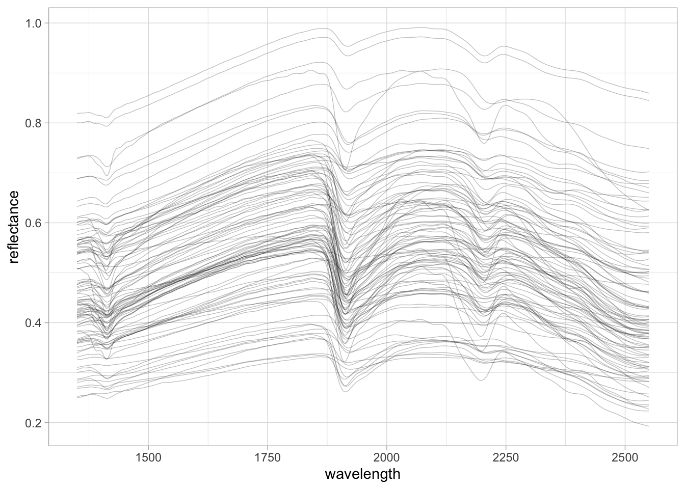
3.2 Chemometric modeling
To start with chemometrics, mdatools offers a series of built-in functions for preprocessing spectra. We are going to combine Savytzky-Golay first derivative (prep.savgol()) with Standard Normal Variate (prep.snv()).
# Preprocessing with SG 1st Der. and SNV
neospectra.prep <- neospectra %>%
select(all_of(spectral.column.names)) %>%
as.matrix() %>%
prep.savgol(width = 11, porder = 1, dorder = 1) %>%
prep.snv(.) %>%
as_tibble() %>%
bind_cols({neospectra %>%
select(-all_of(spectral.column.names))}, .)
# Visualization of preprocessed spectra
set.seed(42)
neospectra.prep %>%
sample_n(100) %>%
pivot_longer(any_of(spectral.column.names),
names_to = "wavelength",
values_to = "reflectance") %>%
mutate(wavelength = as.numeric(wavelength),
reflectance = as.numeric(reflectance)) %>%
ggplot(data = .) +
geom_line(aes(x = wavelength, y = reflectance, group = id.sample_local_c),
alpha = 0.25, linewidth = 0.25) +
theme_light()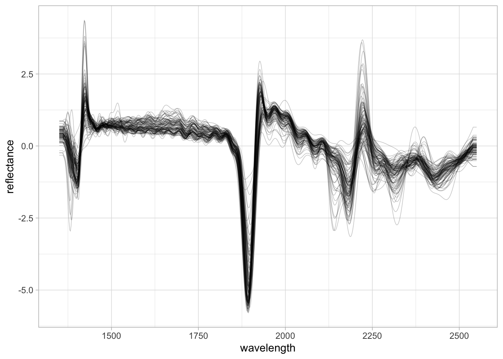
Before model calibration, we split the dataset into train and test sets using the same geographic rule employed in the Processing section — USA samples for training, African samples for testing.
# Train split: USA samples
# Predictors and outcome are separated; log1p is applied to SOC to reduce skewness
neospectra.train <- neospectra.prep %>%
filter(location.country_iso.3166_txt == "USA")
neospectra.train.predictors <- neospectra.train %>%
select(all_of(spectral.column.names)) %>%
as.matrix()
neospectra.train.outcome <- neospectra.train %>%
select(oc_usda.c729_w.pct) %>%
mutate(oc_usda.c729_w.pct = log1p(oc_usda.c729_w.pct)) %>%
as.matrix()
# Test split: non-USA samples
neospectra.test <- neospectra.prep %>%
filter(location.country_iso.3166_txt != "USA")
neospectra.test.predictors <- neospectra.test %>%
select(all_of(spectral.column.names)) %>%
as.matrix()
neospectra.test.outcome <- neospectra.test %>%
select(oc_usda.c729_w.pct) %>%
mutate(oc_usda.c729_w.pct = log1p(oc_usda.c729_w.pct)) %>%
as.matrix()We can now pass the preprocessed spectra to the PLSR algorithm.
PLSR compresses the spectra into several uncorrelated factors that simultaneously maximize covariance of the spectra and the soil property of interest — in this case, SOC. The resulting scores from these latent factors are then fed into a multivariate linear regression model.
NoteNote
If you want to learn more about PLSR and PCA, the mdatools documentation offers a good explanation. Similarly, take a look at this excellent chapter from All Models Are Wrong: Concepts of Statistical Learning.
We are going to test up to 20 factors (ncomp = 20), run 10-fold cross-validation on the train data (cv = 10), center the spectra (no scale) before compression — performed globally across folds (center = TRUE, scale = FALSE, cv.scope = 'global') — and use a data-driven method ("ddmoments") to estimate critical limits for extreme and outlier observations. The model is named “SOC prediction model”.
We can fit the PLSR by passing the train and test samples together in the call…
set.seed(42)
pls.model.soc <- pls(x = neospectra.train.predictors,
y = neospectra.train.outcome,
ncomp = 20,
x.test = neospectra.test.predictors,
y.test = neospectra.test.outcome,
center = TRUE, scale = FALSE,
cv = 10, lim.type = "ddmoments", cv.scope = 'global',
info = "SOC prediction model")Or run separately, which is useful when you want to apply a calibration model to new data independently.
# Alternatively: fit calibration model first, then predict on test set
set.seed(42)
pls.model.soc.calibration <- pls(x = neospectra.train.predictors,
y = neospectra.train.outcome,
ncomp = 20,
center = TRUE, scale = FALSE,
cv = 10, lim.type = "ddmoments", cv.scope = 'global',
info = "SOC prediction model")
pls.model.soc.predictions <- predict(pls.model.soc.calibration,
x = neospectra.test.predictors,
y = neospectra.test.outcome,
cv = FALSE)From these model fits, we can get a summary of the model.
summary(pls.model.soc)
PLS model (class pls) summary
-------------------------------
Info: SOC prediction model
Number of selected components: 15
Cross-validation: random with 10 segments
Response variable: oc_usda.c729_w.pct
X cumexpvar Y cumexpvar R2 RMSE Slope Bias RPD
Cal 94.66939 73.35968 0.734 0.293 0.734 0.0000 1.94
Cv NA NA 0.711 0.305 0.725 -0.0002 1.86
Test 94.50955 82.85942 0.587 0.239 0.785 0.1102 1.76You can see that the number of selected components is 17, which was automatically chosen from the 10-fold CV results.
Let’s plot the model. We will explore the visualization features in more detail soon.
# Visualize representation limits, model coefficients, performance, and fit
plot(pls.model.soc, show.legend = TRUE)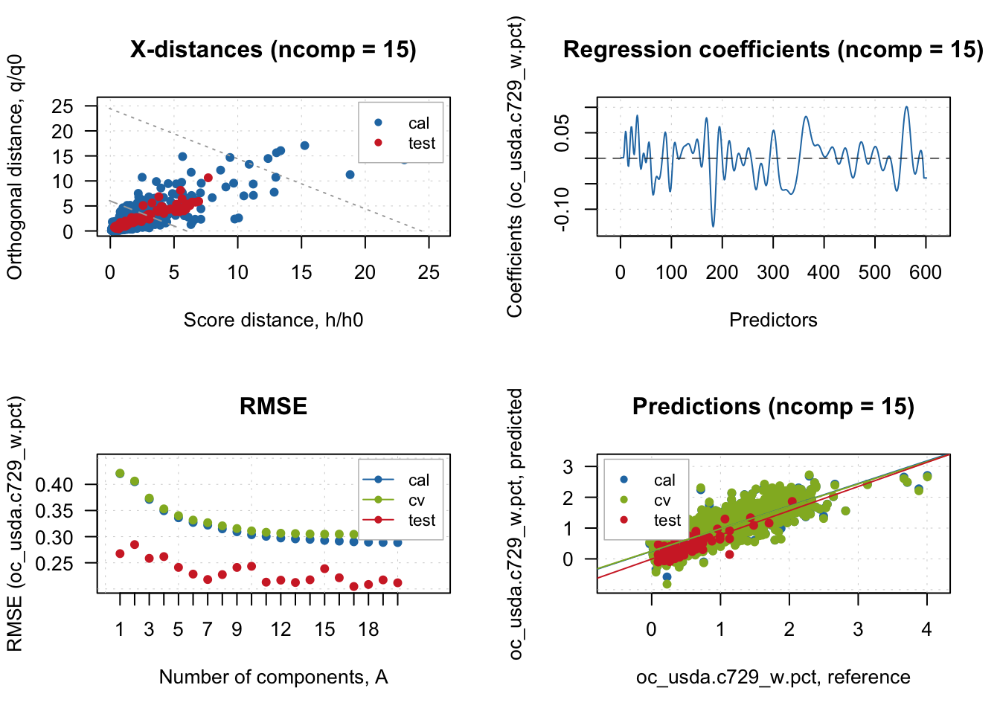
There is a slight mismatch between CV and test performance, likely due to the geographical difference and underlying relationships (soil types, types of carbon) between the training (USA) and test (Africa) samples. Let’s set the number of components that worked best for the test samples.
# Performance is more consistent across train, CV, and test with 11 components
pls.model.soc <- selectCompNum(pls.model.soc, 11)
summary(pls.model.soc)
PLS model (class pls) summary
-------------------------------
Info: SOC prediction model
Number of selected components: 11
Cross-validation: random with 10 segments
Response variable: oc_usda.c729_w.pct
X cumexpvar Y cumexpvar R2 RMSE Slope Bias RPD
Cal 91.58803 71.91489 0.719 0.301 0.719 0.0000 1.89
Cv NA NA 0.704 0.308 0.714 0.0002 1.84
Test 92.16374 86.36375 0.672 0.213 0.681 -0.0074 1.76plot(pls.model.soc, show.legend = FALSE)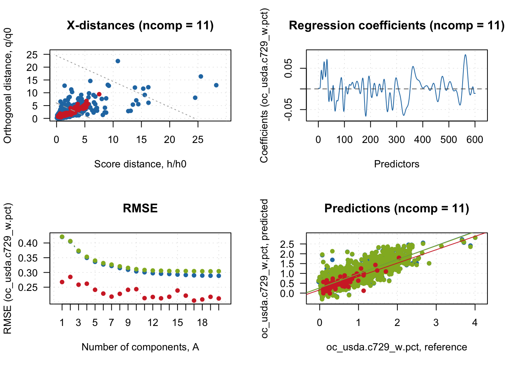
3.3 Model and predictions interpretation
We can start the interpretation by looking at how observations are classified based on spectral dissimilarity. For this, mdatools uses both the Q statistic and Hotelling \(T^2\) as distance metrics for classifying samples as regular, extreme, or outlier.
The Q statistic, known as orthogonal distance in mdatools, measures the remaining spectral variance that is not accounted for during spectral compression and is not used by the model. Observations with unique features not well represented by the PLSR factors are flagged. The Hotelling \(T^2\), on the other hand, focuses on the mean deviation of observation scores produced by the retained factors, flagging samples that are very distinct in score space. Together, these two complementary metrics can detect observations that are potentially underrepresented by the PLSR model. The classification thresholds are based on critical limits calculated from the calibration set; mdatools currently supports four methods, using the data-driven moments approach (lim.type = "ddmoments") by default.
We can see that for the test set, several observations were flagged as potential extreme observations, with no spectral outliers detected.
# Sample categorization based on Q and T2 limits
outlier.detection <- categorize(pls.model.soc.calibration,
pls.model.soc.predictions,
ncomp = 11)
head(outlier.detection)[1] regular regular regular regular extreme regular
Levels: regular extreme outlierplotResiduals(pls.model.soc.predictions,
cgroup = outlier.detection,
ncomp = 11)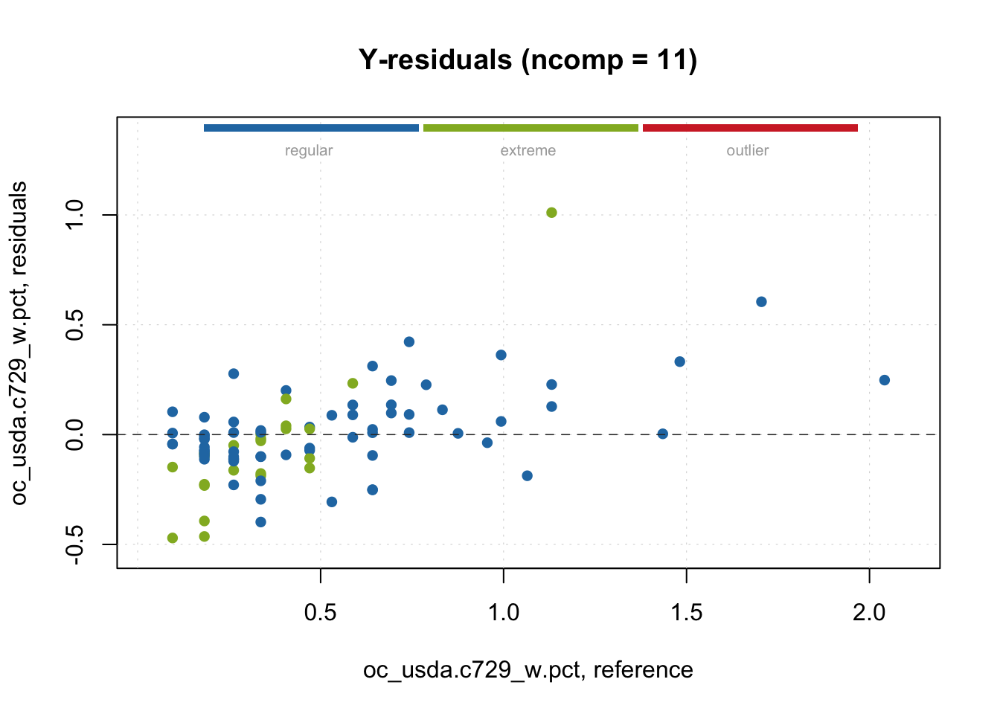
We can further explore the PLSR model with additional built-in plot functions — for example, examining model performance across the full range of components tested, for all data splits.
plotRMSE(pls.model.soc, show.labels = TRUE)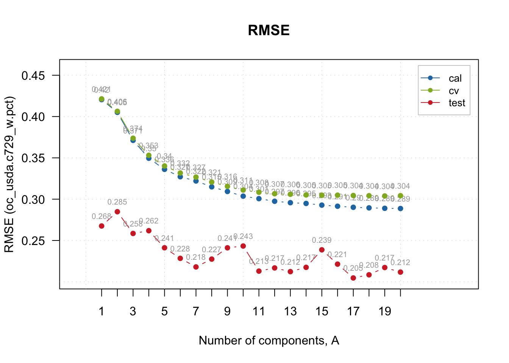
With the predictions made, we can run a classic observed vs. predicted scatterplot.
# Predictions scatterplot
plotPredictions(pls.model.soc, show.line = TRUE, pch = 20, cex = 0.25)
abline(a = 0, b = 1)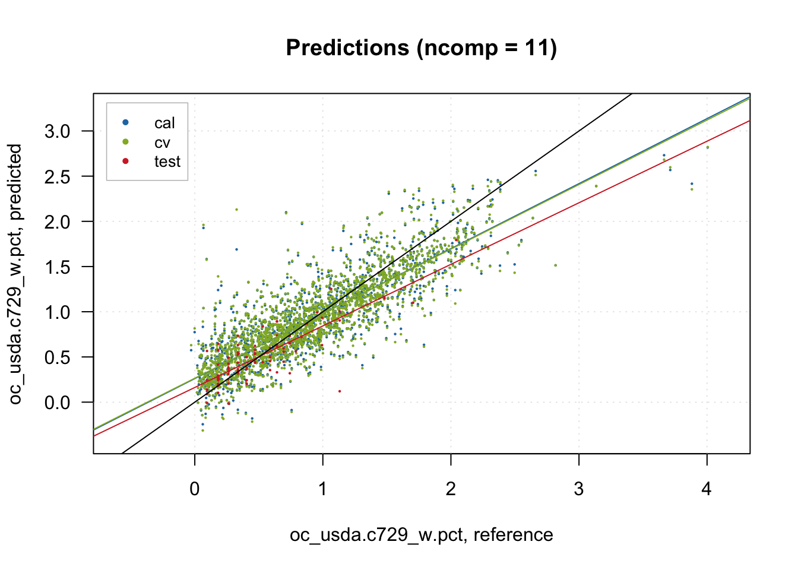
We can also inspect the residuals.
# Inspection plot for outcome residuals
plotYResiduals(pls.model.soc, cex = 0.5, show.label = TRUE)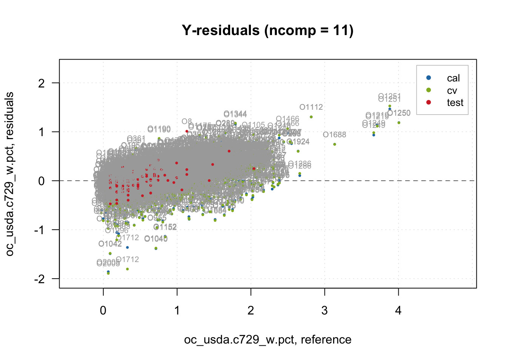
Another common visualization that aids model interpretation is variable importance. For PLSR, the Variable Importance in Projection (VIP) score is routinely employed.
# Variable Importance in Projection (VIP) scores
plotVIPScores(pls.model.soc)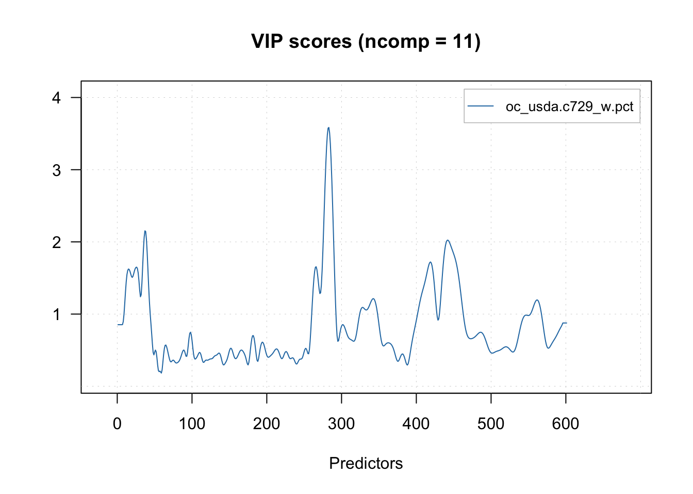
vip <- vipscores(pls.model.soc, ncomp = 11)
head(vip) oc_usda.c729_w.pct
1350 0.852944
1352 0.852944
1354 0.852944
1356 0.852944
1358 0.852944
1360 0.852944There are many other plot functions available for interpreting the PLSR model.
For example, how much of the original spectral variance (X variables) is retained by 11 components/factors? Around 90% for both train and test sets.
# Cumulative variance retained from predictors (spectra)
plotXCumVariance(pls.model.soc, type = 'h', show.labels = TRUE, legend.position = 'bottomright')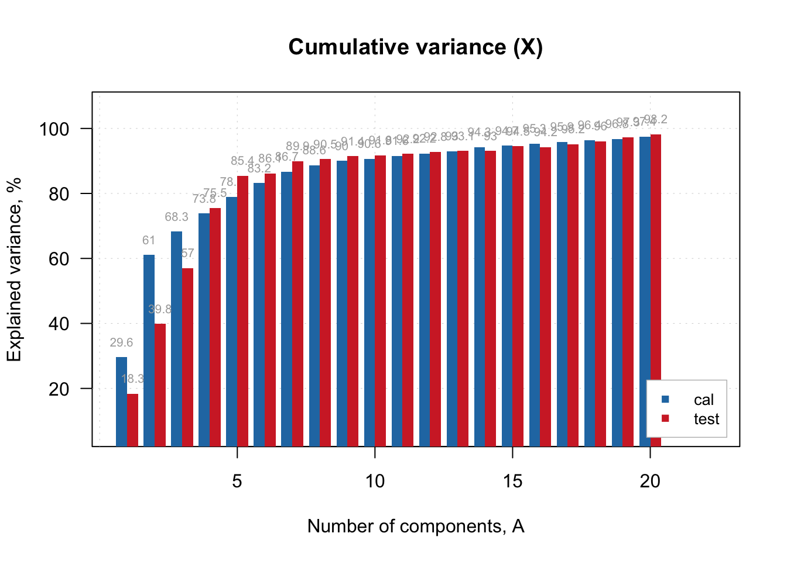
As PLSR simultaneously maximizes variance in both the spectra (X) and the outcome (Y), how much of the outcome variance is retained by 11 components? About 70% in the train (= R^2) set and 88% in the test samples.
# Cumulative variance retained from outcome
plotYCumVariance(pls.model.soc, type = 'b', show.labels = TRUE, legend.position = 'bottomright')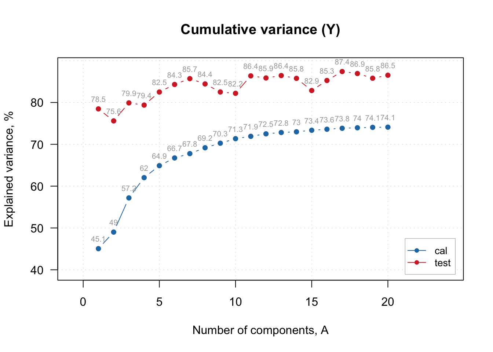
We can also visualize the scores of the latent factors. Here we plot the first three combinations.
# Score plots for compressed spectra
plotXScores(pls.model.soc, comp = c(1, 2), show.legend = TRUE, cex = 0.5, legend.position = 'topleft')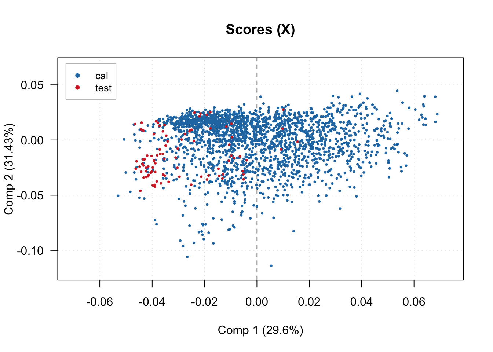
# plotXScores(pls.model.soc, comp = c(1, 3), show.legend = TRUE, cex = 0.5, legend.position = 'bottomright')During spectra compression, we can also visualize the estimated loadings for the first 5 components across the original spectral range.
# Loadings plot for the first 5 components
plotXLoadings(pls.model.soc, comp = c(1, 2, 3, 4, 5), type = 'l')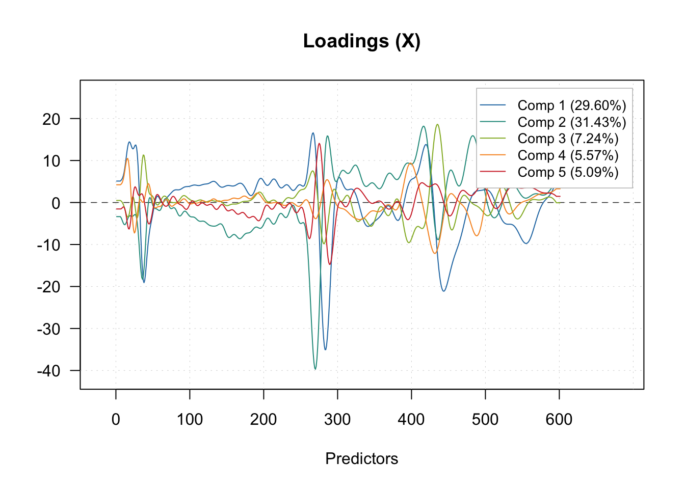
Lastly, we can explore all the internal information retained in the pls and plsres objects produced by mdatools.
# Exploring internal info from model object
pls.model.soc$T2lim Comp 1 Comp 2 Comp 3 Comp 4 Comp 5 Comp 6
Extremes limits 5.988493 11.976985 17.965478 23.953970 29.94246 35.930956
Outliers limits 24.405933 48.811865 73.217798 97.623730 122.02966 146.435595
Mean 0.999504 1.999008 2.998512 3.998016 4.99752 5.997024
DoF 1.000000 1.000000 1.000000 1.000000 1.00000 1.000000
Comp 7 Comp 8 Comp 9 Comp 10 Comp 11 Comp 12
Extremes limits 41.919448 47.907941 53.896433 59.88493 65.87342 71.86191
Outliers limits 170.841528 195.247461 219.653393 244.05933 268.46526 292.87119
Mean 6.996528 7.996032 8.995536 9.99504 10.99454 11.99405
DoF 1.000000 1.000000 1.000000 1.00000 1.00000 1.00000
Comp 13 Comp 14 Comp 15 Comp 16 Comp 17 Comp 18
Extremes limits 77.85040 83.83890 89.82739 95.81588 101.80437 107.79287
Outliers limits 317.27712 341.68306 366.08899 390.49492 414.90085 439.30679
Mean 12.99355 13.99306 14.99256 15.99206 16.99157 17.99107
DoF 1.00000 1.00000 1.00000 1.00000 1.00000 1.00000
Comp 19 Comp 20
Extremes limits 113.78136 119.76985
Outliers limits 463.71272 488.11865
Mean 18.99058 19.99008
DoF 1.00000 1.00000
attr(,"name")
[1] "Critical limits for score distances (T2)"
attr(,"alpha")
[1] 0.05
attr(,"gamma")
[1] 0.01
attr(,"lim.type")
[1] "ddmoments"pls.model.soc$Qlim Comp 1 Comp 2 Comp 3 Comp 4 Comp 5 Comp 6
Extremes limits 281.09873 155.5899 126.66209 104.43189 84.12812 67.24583
Outliers limits 1145.60993 634.1024 516.20778 425.60922 342.86179 274.05850
Mean 46.91653 25.9686 21.14042 17.43011 14.04133 11.22361
DoF 1.00000 1.0000 1.00000 1.00000 1.00000 1.00000
Comp 7 Comp 8 Comp 9 Comp 10 Comp 11
Extremes limits 53.051708 45.354386 39.84516 37.515935 33.587508
Outliers limits 216.210737 184.840520 162.38781 152.895136 136.884943
Mean 8.854548 7.569833 6.65032 6.261563 5.605893
DoF 1.000000 1.000000 1.00000 1.000000 1.000000
Comp 12 Comp 13 Comp 14 Comp 15 Comp 16 Comp 17
Extremes limits 31.003186 27.850992 22.875638 21.284158 18.779020 16.395094
Outliers limits 126.352611 113.505933 93.229018 86.742986 76.533367 66.817742
Mean 5.174559 4.648445 3.818038 3.552413 3.134295 2.736408
DoF 1.000000 1.000000 1.000000 1.000000 1.000000 1.000000
Comp 18 Comp 19 Comp 20
Extremes limits 14.493664 12.846608 10.335675
Outliers limits 59.068518 52.355989 42.122753
Mean 2.419052 2.144152 1.725067
DoF 1.000000 1.000000 1.000000
attr(,"name")
[1] "Critical limits for orthogonal distances (Q)"
attr(,"alpha")
[1] 0.05
attr(,"gamma")
[1] 0.01
attr(,"lim.type")
[1] "ddmoments"pls.model.soc$res$cal
PLS results (class plsres)
Call:
plsres(y.pred = yp, y.ref = y.ref, ncomp.selected = object$ncomp.selected,
xdecomp = xdecomp, ydecomp = ydecomp)
Major fields:
$ncomp.selected - number of selected components
$y.pred - array with predicted y values
$y.ref - matrix with reference y values
$rmse - root mean squared error
$r2 - coefficient of determination
$slope - slope for predicted vs. measured values
$bias - bias for prediction vs. measured values
$ydecomp - decomposition of y values (ldecomp object)
$xdecomp - decomposition of x values (ldecomp object)pls.model.soc$res$cal$xdecomp
Results of data decomposition (class ldecomp).
Major fields:
$scores - matrix with score values
$T2 - matrix with T2 distances
$Q - matrix with Q residuals
$ncomp.selected - selected number of components
$expvar - explained variance for each component
$cumexpvar - cumulative explained variancepls.model.soc$res$test
PLS results (class plsres)
Call:
plsres(y.pred = yp, y.ref = y.ref, ncomp.selected = object$ncomp.selected,
xdecomp = xdecomp, ydecomp = ydecomp)
Major fields:
$ncomp.selected - number of selected components
$y.pred - array with predicted y values
$y.ref - matrix with reference y values
$rmse - root mean squared error
$r2 - coefficient of determination
$slope - slope for predicted vs. measured values
$bias - bias for prediction vs. measured values
$ydecomp - decomposition of y values (ldecomp object)
$xdecomp - decomposition of x values (ldecomp object)pls.model.soc$res$test$xdecomp
Results of data decomposition (class ldecomp).
Major fields:
$scores - matrix with score values
$T2 - matrix with T2 distances
$Q - matrix with Q residuals
$ncomp.selected - selected number of components
$expvar - explained variance for each component
$cumexpvar - cumulative explained varianceLet’s extract the test predictions for a customized plot. Note that since we applied log1p() to the SOC outcome before modeling, we back-transform the predictions with expm1() to return to the original scale.
# Extracting test predictions
test.predictions <- pls.model.soc$res$test$y.pred
dim(test.predictions)[1] 90 20 1# Selecting predictions at component 11
test.predictions <- tibble(predicted = test.predictions[,11,1])
# Back-transforming predicted values from log1p to original scale
neospectra.test.results <- neospectra.test %>%
select(-all_of(spectral.column.names)) %>%
bind_cols(test.predictions) %>%
rename(observed = oc_usda.c729_w.pct) %>%
mutate(predicted = expm1(predicted))We can then calculate additional evaluation metrics on the original scale.
# Calculating performance metrics
neospectra.test.performance <- neospectra.test.results %>%
summarise(n = n(),
rmse = rmse_vec(truth = observed, estimate = predicted),
bias = msd_vec(truth = observed, estimate = predicted),
rsq = rsq_trad_vec(truth = observed, estimate = predicted),
ccc = ccc_vec(truth = observed, estimate = predicted, bias = TRUE),
rpd = rpd_vec(truth = observed, estimate = predicted),
rpiq = rpiq_vec(truth = observed, estimate = predicted))
neospectra.test.performance# A tibble: 1 × 7
n rmse bias rsq ccc rpd rpiq
<int> <dbl> <dbl> <dbl> <dbl> <dbl> <dbl>
1 90 0.495 0.0410 0.742 0.832 1.98 1.41And plot the final observed vs. predicted scatterplot with ggplot2.
# Final accuracy plot
performance.annotation <- paste0("Rsq = ", round(neospectra.test.performance[[1,"rsq"]], 2),
"\nRMSE = ", round(neospectra.test.performance[[1,"rmse"]], 2), " wt%")
p.final <- ggplot(neospectra.test.results) +
geom_point(aes(x = observed, y = predicted)) +
geom_abline(intercept = 0, slope = 1) +
annotate(geom = "text", x = -Inf, y = Inf, hjust = -0.1, vjust = 1.2,
label = performance.annotation, size = 3) +
labs(title = "Soil Organic Carbon (wt%) test prediction",
x = "Observed", y = "Predicted") +
theme_light() + theme(legend.position = "bottom")
# Ensuring a square plot with equal axis limits
r.max <- max(layer_scales(p.final)$x$range$range)
r.min <- min(layer_scales(p.final)$x$range$range)
s.max <- max(layer_scales(p.final)$y$range$range)
s.min <- min(layer_scales(p.final)$y$range$range)
t.max <- round(max(r.max, s.max), 1)
t.min <- round(min(r.min, s.min), 1)
p.final <- p.final + coord_equal(xlim = c(t.min, t.max), ylim = c(t.min, t.max))
p.final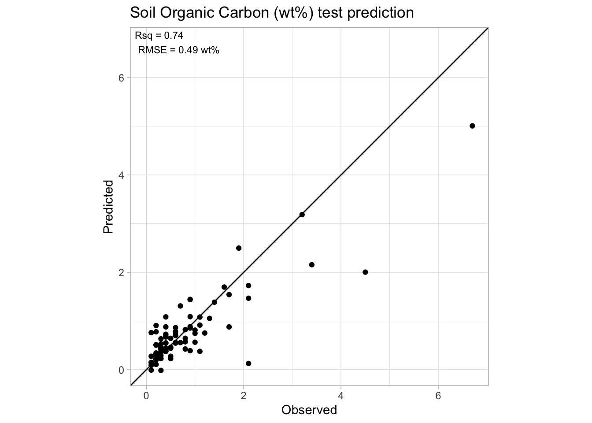